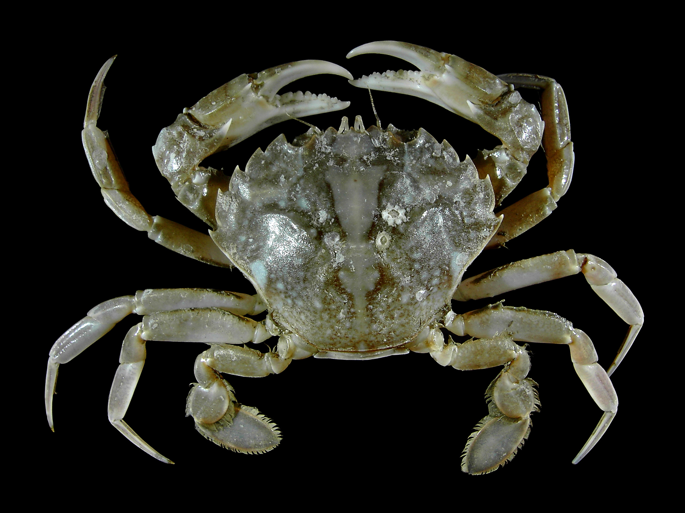
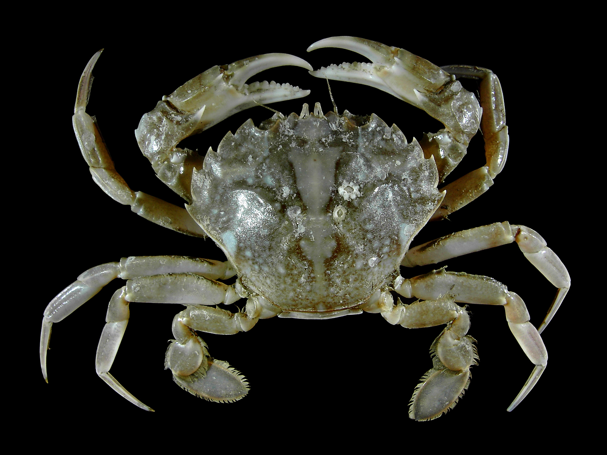
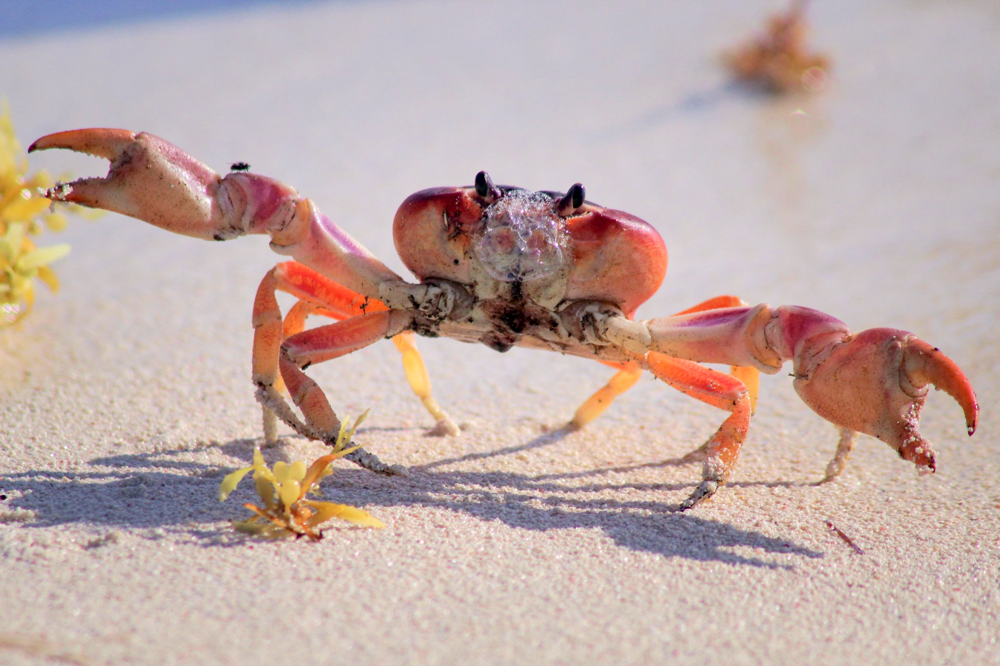

Вчера я вспоминала как три месяца назад на Пагкоре кушала крабов!

Вчера я вспоминала как три месяца назад на Пагкоре кушала крабов!

Подготовьте стол. От крабов много грязи и беспорядка, так что стол надо защитить. Положите плотную бумагу на стол, чтобы она впитывала сок и позволила потом быстро навести порядок. Приготовьте молоток для крабов, тупой нож, и щипцы для раскалывания клешней, если они у вас есть.
Если вы еще не приготовили краба, сделайте это. Приготовьте их
на пару. Из голубых они превратятся в красных. Обычно крабов готовят на пару со
слоем приправ.
Далее следующий этап: поедание краба